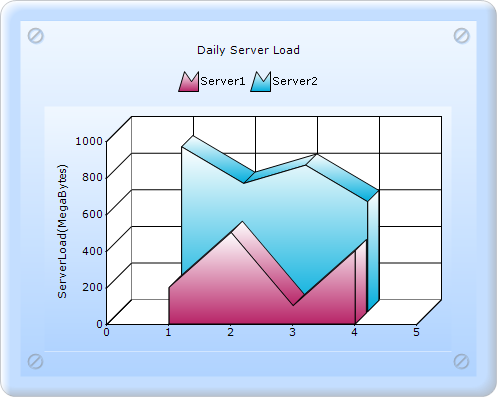

To create an Area chart through Builder:
1. In Controller, return view to the corresponding View page.
|
[C#] public ActionResult SimpleChart() { return View(); } |
2. In the View page, invoke the ChartBuilder by using the control ID as the first argument.
3. Add the Series to the ChartModel and set the series type to Area, and add the Points to the series and set the style.
4. Set the ChartModel and ChartArea properties.
|
View[ASPX]
<%= Html.Chart("SimpleChart").Series(series =>{ series.Add().Type(Syncfusion.Windows.Forms.Chart.ChartSeriesType. Area) .Text("Server 1") .Points(point => { point.Add(1, 200); point.Add(2, 500); point.Add(3, 100); point.Add(4, 400); }); series.Add().Type(Syncfusion.Windows.Forms.Chart.ChartSeriesType. Area) .Text("Server 2") .Points(point => { point.Add(1, 900); point.Add(2, 700); point.Add(3, 800); point.Add(4, 600); }); }).Skins(ChartModelSkins.Office2007Blue) .ChartSeriesSkins(ChartSeriesSkins.Analog) .ShowLegend(true) .LegendsPlacement(Syncfusion.Windows.Forms.Chart.ChartPlacement.Outside) .LegendPosition(Syncfusion.Windows.Forms.Chart.ChartDock.Top) .Legend(legend =>{ legend.Alignment(Syncfusion.Windows.Forms.Chart.ChartAlignment.Center); }).Series3D(true) .Size(new System.Drawing.Size(500, 400)) .BorderAppearance(border =>{ border.SkinStyle(Syncfusion.Windows.Forms.Chart.ChartBorderSkinStyle.Pinned); }).PrimaryYAxis(yaxis =>{ yaxis.Title("Server Load(MegaBytes)"); }).Text("Daily Server Load")
%>
|
|
View[cshtml] @{ Html.Chart("SimpleChart").Series(series =>{ series.Add().Type(Syncfusion.Windows.Forms.Chart.ChartSeriesType. Area) .Text("Server 1") .Points(point => { point.Add(1, 200); point.Add(2, 500); point.Add(3, 100); point.Add(4, 400); }); series.Add().Type(Syncfusion.Windows.Forms.Chart.ChartSeriesType. Area) .Text("Server 2") .Points(point => { point.Add(1, 900); point.Add(2, 700); point.Add(3, 800); point.Add(4, 600); }); }).Skins(ChartModelSkins.Office2007Blue) .ChartSeriesSkins(ChartSeriesSkins.Analog) .ShowLegend(true) .LegendsPlacement(Syncfusion.Windows.Forms.Chart.ChartPlacement.Outside) .LegendPosition(Syncfusion.Windows.Forms.Chart.ChartDock.Top) .Legend(legend =>{ legend.Alignment(Syncfusion.Windows.Forms.Chart.ChartAlignment.Center); }).Series3D(true) .Size(new System.Drawing.Size(500, 400)) .BorderAppearance(border =>{ border.SkinStyle(Syncfusion.Windows.Forms.Chart.ChartBorderSkinStyle.Pinned); }).PrimaryYAxis(yaxis =>{ yaxis.Title("Server Load(MegaBytes)"); }).Text("Daily Server Load") .Render(); } |
5. Build and run the application, to get the following output:

Figure 97: Chart displaying Area Series in 3D view